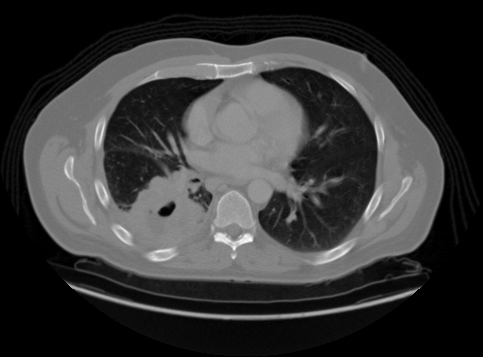
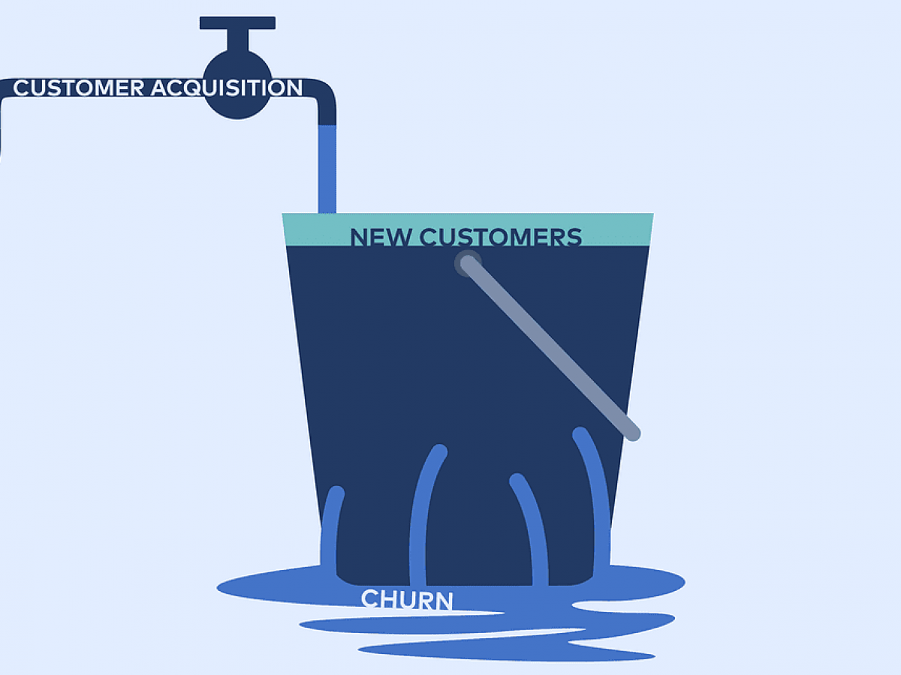

Projects

Adenocarcinoma detection
Developed using tensorflow neural networks, backend done with FastAPI and deployed on Google Cloud Platform.
Diabetes prediction
Diabetes detection given certain data from a patient, built with a Random Forest Classifier on Sklearn, backend with FastAPI.

Falcon 9 landing stage prediction
This project is connected to the IBM Data Science Professional Certificate, being the capstone of the certification. It is divided in different parts such as: EDA, Data Visualization, model building, testing and more.

Customer segmetation (customer churn)
Model building, Data Visualization and more, in order to provide a segmentation of a consumer credit card portfolio aiming to predict clients loyalty or attrition.